Sports inlcuded in MMA
BOXING : Boxing is a combat sport where two opponents fight in a ring using gloves and specific techniques. The objective is to score points by landing punches on the opponent while avoiding being hit. Matches consist of rounds, and victory can be achieved by knockout, technical knockout, or decision by judges.
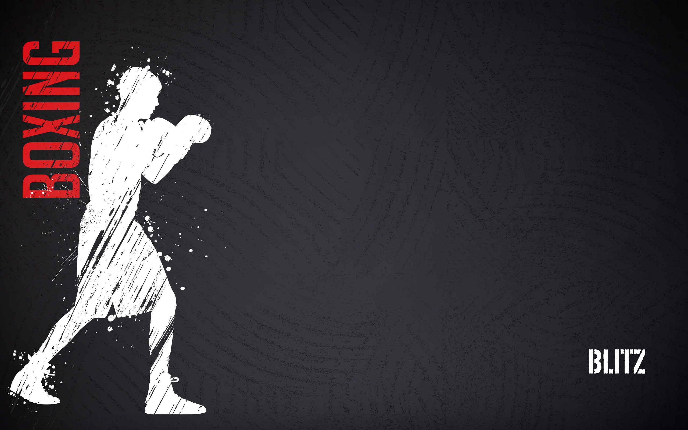 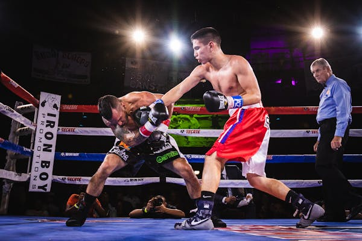 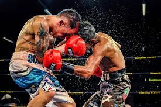JIU-JITSU : Jiu jitsu is a martial art focused on grappling and ground fighting. Practitioners use techniques like joint locks and chokeholds to submit opponents. It emphasizes leverage and technique over strength, allowing smaller individuals to defend against larger foes. Training often involves sparring and drilling techniques for skill development.
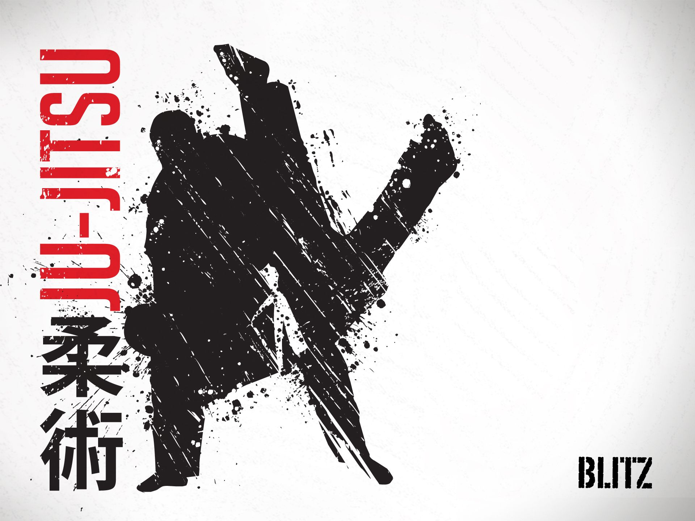 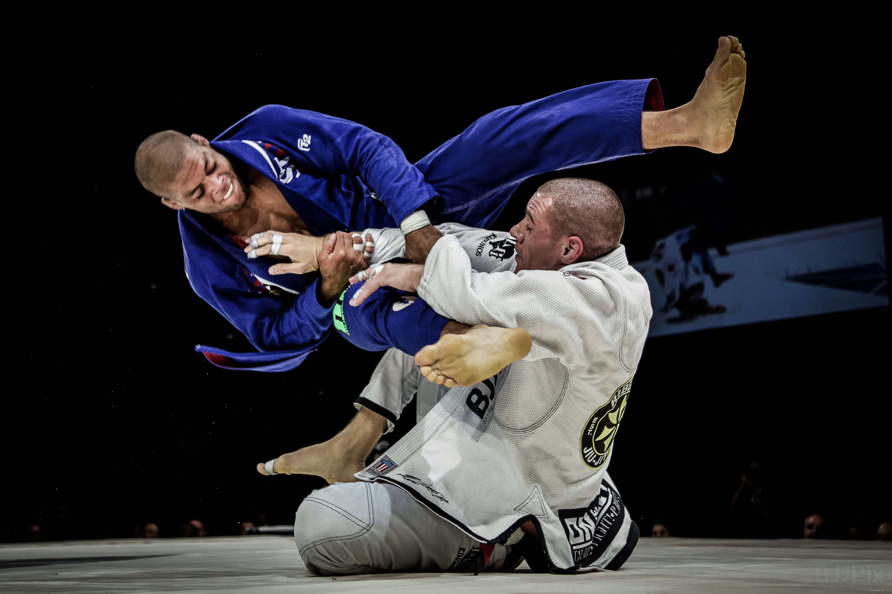 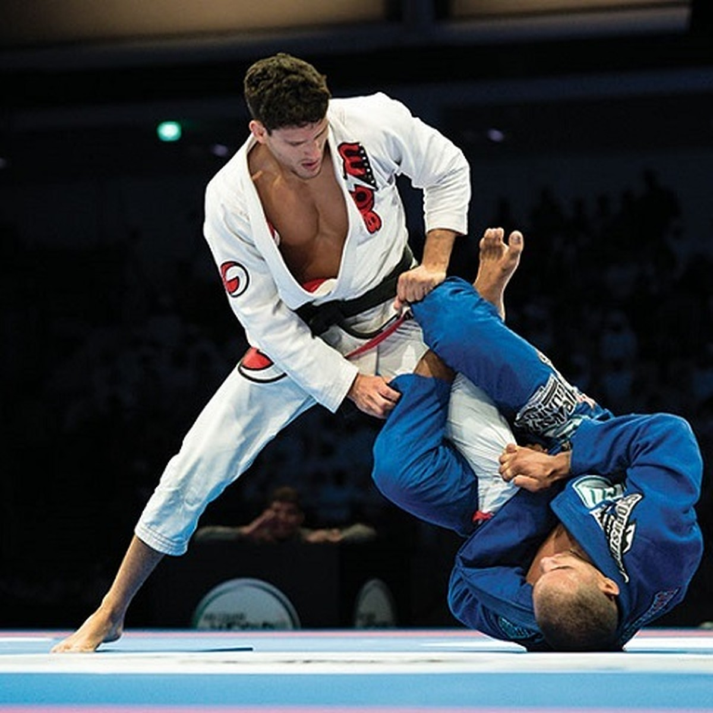KICKBOXING : Kickboxing is a striking martial art that combines punches and kicks. Practiced in a ring, it emphasizes footwork, speed, and technique. Competitors score points by landing effective strikes while defending against attacks. Training typically includes bag work, sparring, and conditioning to enhance strength and agility. It's both a sport and fitness activity.
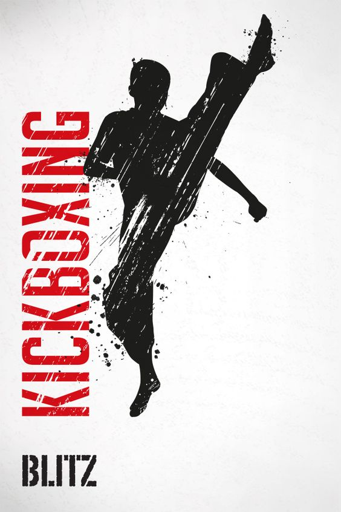 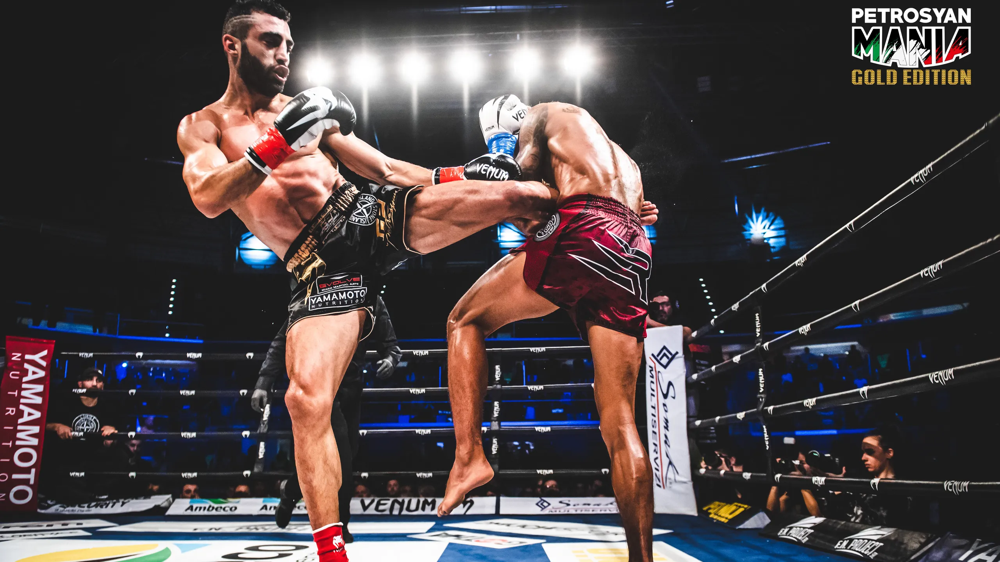 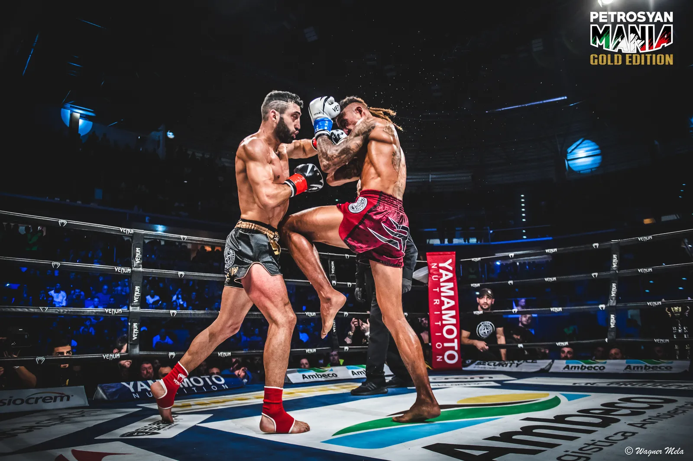WRESTLING : Wrestling is a competitive sport where two athletes grapple to gain control over each other. It involves techniques like takedowns, holds, and pins to score points or achieve a pinfall victory. Styles vary, including freestyle and Greco-Roman. Wrestling emphasizes strength, technique, and strategy, often practiced in a mat or ring.
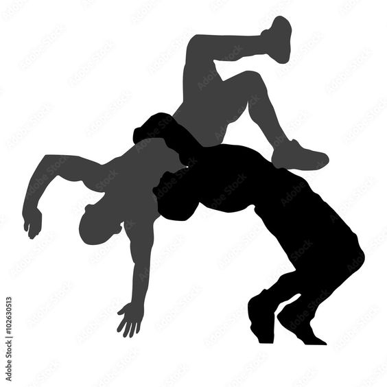 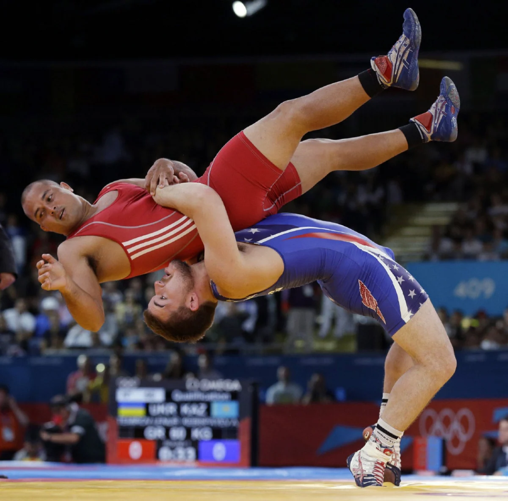 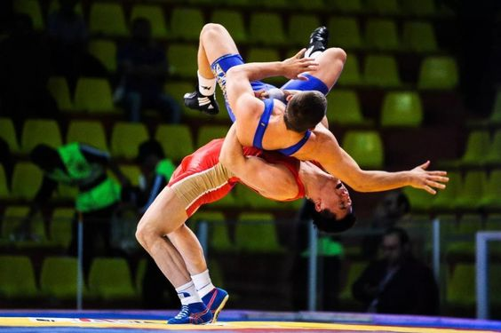MUAI-THAI : Muay Thai, known as the "Art of Eight Limbs," is a striking martial art from Thailand that utilizes punches, kicks, elbows, and knee strikes. Practitioners train in clinch fighting and emphasize conditioning, technique, and strategy. It is both a traditional sport and a popular form of self-defense and fitness.
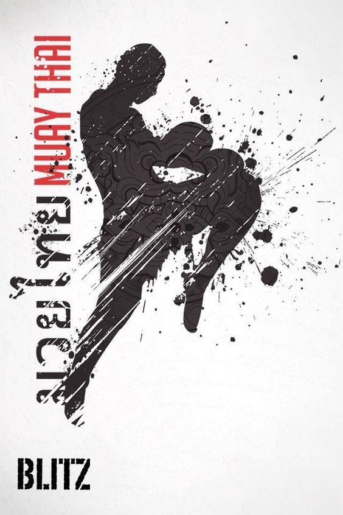 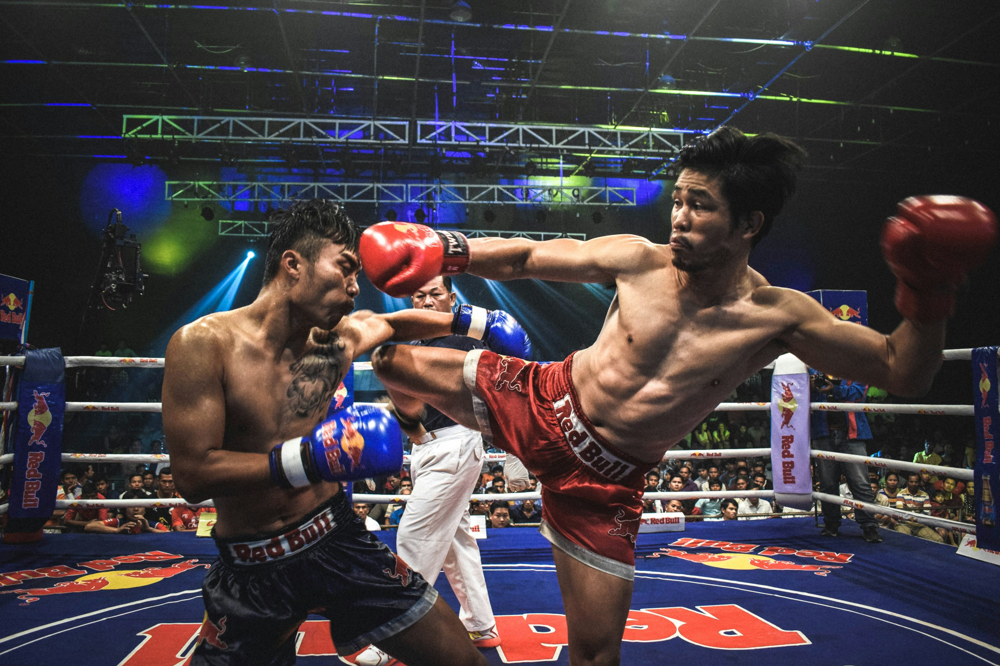 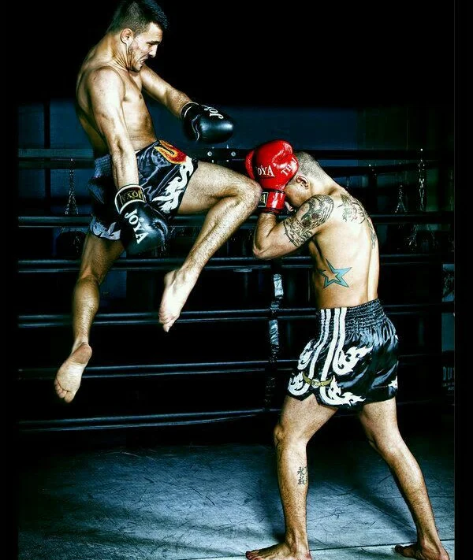JUDO : Judo is a martial art focused on throws, pins, and submissions. Originating in Japan, it emphasizes using an opponent's force against them. Practitioners wear a gi and compete on a mat, scoring points for successful techniques. Judo promotes physical fitness, discipline, and respect while fostering self-defense skills.
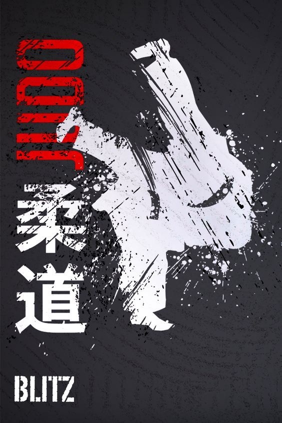 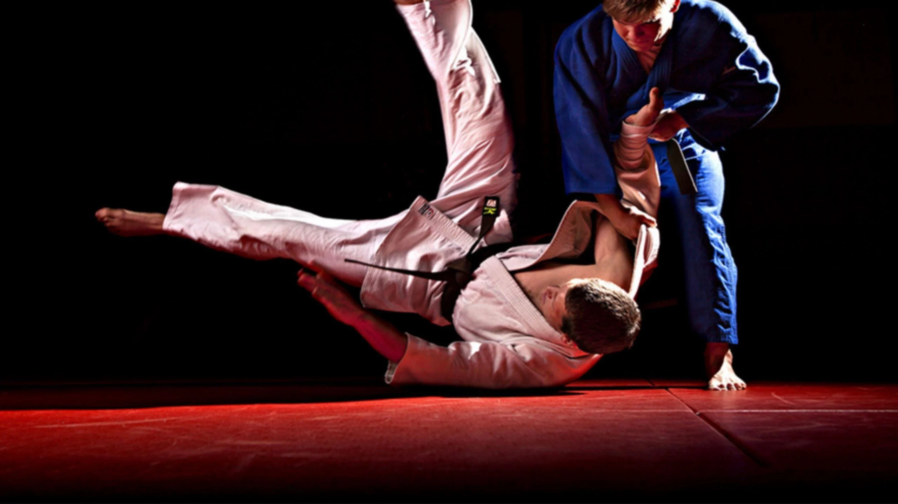
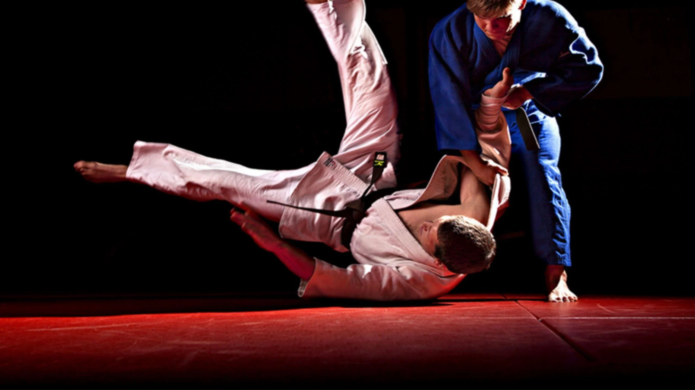